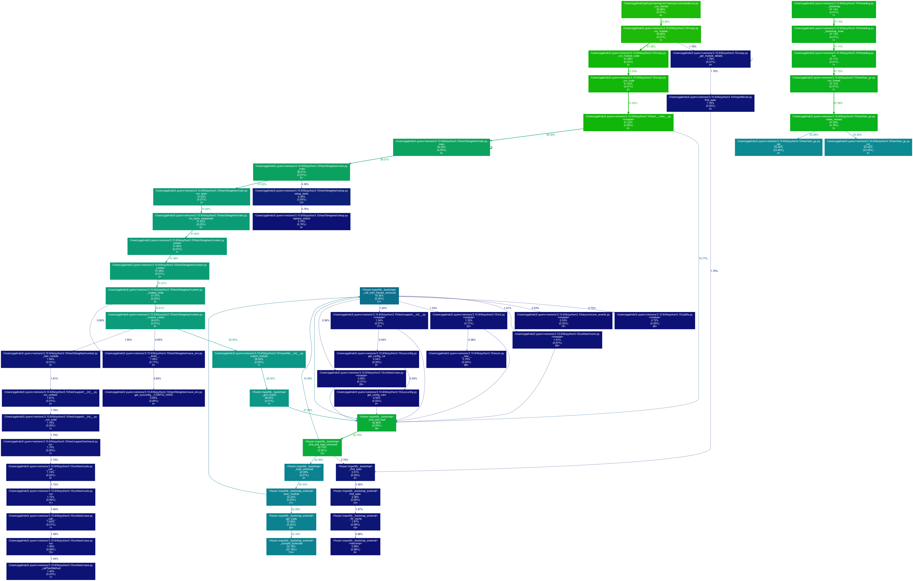

Transform Reporter¶
The transform reporter is used to convert a Memray capture file into a format that can be consumed by other tools.
Basic Usage¶
The general form of the transform subcommand is:
memray transform <format> [options] <results>
The transform subcommand requires two arguments: the format you want the
output file to be in, and the location of the capture file previously generated
using the run subcommand.
The output file will be named memray-<format>-<input file name>.<format_suffix>
unless the -o argument is used to override the default name.
Available formats¶
These are the formats that you can use as the format parameter to the
transform subcommand.
gprof2dot¶
This format allows you to produce JSON files that are compatible with the gprof2dot tool. This tool can then be used in combination with graphviz to produce a graph-like representation of the memory usage like this one:
A node in the output graph represents a function and has the following layout:
+-----------------------------+
| filename |
| function_name |
| total % |
| (self %) |
| num_allocs × |
+-----------------------------+
where:
total %is the percentage of memory allocated by this function and all its children;self %is the percentage of memory allocated by this function alone;num_allocsis the number of times an allocation was performed by this function alone.
An edge represents a call between two functions and has the following layout:
percentage %
caller -------------------> callee
Where percentage % is the percentage of memory allocated below calls from caller to callee.
The color of the nodes and edges varies according to the total % value. In
the default temperature-like color-map, the functions where the most memory is
allocated (hot-spots) are saturated red, and functions where little memory is
allocated are dark blue. Note that functions where negligible or no memory is
allocated do not appear in the graph by default.
Check the gprof2dot documentation for more information on how to use the tool.
csv¶
This format allows you to produce a comma separated values file with all the allocations that contributed to the process’s memory high water mark. This can be very useful to analyze the information using other data analysis tools and libraries such as pandas.
Every row in the CSV file represents a call stack where memory that contributed to the process’s memory high water mark was allocated.
The available columns are:
allocator: the name of the allocator that performed the allocations.num_allocations: the number of different allocations performed at this location by this thread and not deallocated before the high water mark.size: the total size in bytes of the allocations performed at this location by this thread and not deallocated before the high water mark.tid: the thread id of the thread that performed the allocations.thread_name: the name of the thread that performed the allocations.stack_trace: the stack trace of the allocations. The stack trace is represented as a|separated list of stack frames (most recent call first), where each stack frame in the list has the following format:<function_name>;<file_name>;<line_number>.
CLI Reference¶
Generate reports files in different formats
usage: memray transform [-h] [-o OUTPUT] [-f]
[--leaks | --temporary-allocation-threshold N | --temporary-allocations]
format results
Positional Arguments¶
- format
Format to use for the report. Available formats: gprof2dot, csv
- results
Results of the tracker run
Named Arguments¶
- -o, --output
Output file name
- -f, --force
If the output file already exists, overwrite it
Default:
False- --leaks
Show memory leaks, instead of peak memory usage
Default:
False- --temporary-allocation-threshold
Report temporary allocations, as opposed to leaked allocations or high watermark allocations. An allocation is considered temporary if at most N other allocations occur before it is deallocated. With N=0, an allocation is temporary only if it is immediately deallocated before any other allocation occurs.
Default:
-1- --temporary-allocations
Equivalent to --temporary-allocation-threshold=1
Please submit feedback, ideas, and bug reports by filing a new issue at https://github.com/bloomberg/memray/issues